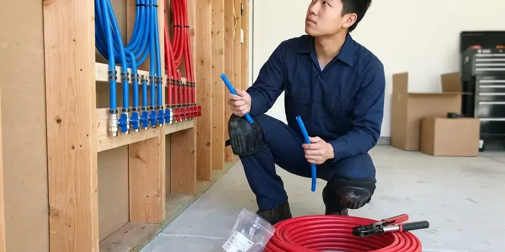

Polybutylene Plumbing Replacement in Jefferson City, MO
Insurance or a home inspector flagged polybutylene in Jefferson City, MO? We remove it and repipe your home in a few days, permit included.
- Free Poly Pipe Inspections
- Permits and Inspection Included
- Fast Scheduling
- Local Jefferson City Crews

Replace Polybutylene Before It Fails in Jefferson City, MO
A planned repipe is cheaper than a flood and an insurance claim.
Local Polybutylene Replacement in Jefferson City, MO
Polybutylene problems rarely show up as a slow drip you can watch. More often, a fitting cracks. One cracked fitting in the attic can bring down a ceiling fast, and the cleanup often costs more than replacing the pipe would have. Owners usually decide to replace it once they see that comparison.
Work we handle every week:
- Small wall openings and matched patches
- Complete attic-routed PEX-A or Type L copper replacement systems
- Quick identification of poly pipe and fittings

Additional Plumbing Maintenance Services in Jefferson City, MO
Our maintenance and specialty plumbing services in Jefferson City, MO protect your home year-round and extend the life of every system.


Customers
Why Choose FGV Plumbing for Polybutylene Plumbing Replacement in Jefferson City, MO?
Choosing a crew for poly replacement means choosing who will work inside your walls for several days. We send plumbers and drywall finishers who do repipes weekly and keep the house usable the whole time. We protect the floors. Every evening the crew cleans up and turns the water on, so the house stays normal at night.
- Poly Experts, We identify polybutylene quickly and know every place it tends to fail.
- Prevent Leaks, Planned replacement removes the pipe most likely to burst before it floods a room.
- Local Knowledge, We know Missouri building codes and how local water affects pipe.
Citywide Coverage
Wherever your home is in Jefferson City, an estimator can usually be there within a few days. The visit is free. We check the pipe at the heater, the main and the fixtures, look at attic access and leave you with a written price, all in about an hour.
Experienced Team
Older construction in Missouri comes with quirks, and our crews have seen most of them.
Safety-First Approach
We pull permits for polybutylene replacement and schedule inspections with your building department. Nothing gets covered before the test. A pressure test on the new system confirms every joint is tight before a single drywall patch goes on the wall.
Trusted Certified Jefferson City Plumbing Services Professionals
At FGV Plumbing, we take pride in licensed, certified plumbing services throughout Jefferson City, MO. Credentials matter in this trade. Every repair, install and maintenance visit follows strict safety and quality rules, and the plumbers doing the work carry recognized industry credentials.
Call Us Now PHCC Plumbing Contractor Recognition
PHCC Plumbing Contractor Recognition Better Business Bureau (BBB) Accreditation
Better Business Bureau (BBB) Accreditation Angi Certified Pro
Angi Certified Pro ISO 9001 Quality Management Certification
ISO 9001 Quality Management CertificationFull Polybutylene Plumbing Replacement in Jefferson City, MO
Finding Polybutylene Leaks in Jefferson City
A poly leak inside a wall or ceiling can run for days before you see a stain. Watch the water meter. If the meter's leak dial moves with everything off, we track the leak down with acoustic equipment and thermal imaging instead of guessing. Once we find it, a temporary fix buys time to schedule the repipe.

Fitting Failure and Emergency Repair in Jefferson City
Acetal plastic and copper crimp ring fittings are often the first part of a poly system to fail. A burst fitting in an attic or wall can cause major damage in minutes. After an emergency repair we schedule the full replacement, since removing the poly system is the only lasting fix.
Polybutylene Replacement Costs in Jefferson City, MO
Replacing polybutylene with PEX in an average home often costs $5,000 to $12,000, depending on size and bathrooms. Copper runs higher. A yard service line typically adds $1,500 to $4,000, and that is still usually less than repairing damage from one burst.
Polybutylene Checks for Home Sales in Jefferson City, MO
Buying or selling a house built between about 1978 and 1995 in Jefferson City, MO? Check for poly. We look at the pipe at the water heater, under sinks, at the main and in the attic, read any stamps and give you a written finding and a replacement estimate. It helps in negotiations.
PEX Pipe Installation in Jefferson City, MO
PEX is the most common replacement for polybutylene because it is flexible, resists scale and corrosion and installs faster than copper. Labor runs lower with PEX. Attic PEX stays out of UV, clear of flues and can lights and supported as the maker specifies, which protects the pipe and the warranty.
Whole-Home PEX Replacement in Jefferson City, MO
PEX-A is the most common replacement for polybutylene because it is flexible, scale resistant and easy to route. We use Uponor PEX-A with expansion fittings that do not restrict flow. New lines run from the main shutoff to every fixture, water heater and appliance, and most homes are completed in two to four working days with water back on each night.
Permits for Polybutylene Replacement in Jefferson City
A whole-house poly replacement in Jefferson City is a repipe, and it usually needs a plumbing permit. We file it. The inspector looks at the new lines with the walls still open, checking supports, nail plates, shutoffs and the pressure test before anything is patched. A permit on file also helps with insurers and buyers.

Copper Replacement Option in Jefferson City
Type L copper appeals to some homeowners for its long history and rigid feel. Joints are soldered or pressed. Copper costs more than PEX and takes a little longer to install, so we help you weigh the cost, your water conditions and how long you plan to stay in the house.
Polybutylene Plumbing Replacement Near Me in Jefferson City, MO
Our crews know the housing tracts in Jefferson City where polybutylene was used most. That helps us plan routes quickly. Familiar framing and layouts mean fewer drywall cuts, shorter pipe runs and less mess.
Living in Jefferson City, MO, you want a plumber who knows local homes and local permits. We pull repipe permits here regularly. It keeps inspections moving, which means patching happens on time and the job wraps up on schedule.
FGV Plumbing at a Glance
- Licensed and insured plumbers serving Jefferson City, MO
- Same-day appointments and 24/7 emergency response
- Upfront, flat-rate pricing before work begins
- 4.9-star rated by 307+ Missouri customers
Jefferson City Map
Jefferson City Information
- Population
- 42,552
- Area codes
- Local
- Service area
- Jefferson City and communities within 40 miles
- Nearby
- Columbia, Wentzville, O'Fallon, Wildwood
Polybutylene in Jefferson City, MO breaks down from the inside as it ages, and the first sign is usually a failed fitting, not a slow drip.
Talk to a Plumber
Call FGV Plumbing for honest, reliable plumbing from people who know the trade in Jefferson City, MO.
Our Specialized Plumbing Services in Jefferson City, MO
At FGV Plumbing, you get every kind of plumbing service from one company across Jefferson City, MO. From leak detection to full system installs, our team works fast and charges fair prices on homes and commercial properties alike. Explore our core services below:


The Poly Pipe Replacement Process in Jefferson City, MO
Polybutylene replacement in Jefferson City, MO runs on a clear schedule so you know what to expect.
Book a Consultation
Call (816) 330-2338 to set up a visit. We look at your poly system and ask about your plans.
Inspect the System
We trace the poly through the house and note any leaks or worn fittings.
Review the Proposal
You get a written proposal with materials, timeline and price. We answer your questions before we begin.
Frequently Asked Questions About Polybutylene Plumbing Replacement in Jefferson City
Most poly replacements in Jefferson City fall between $4,000 and $15,000 or more. Size drives the price. A small single-bath home with easy attic access sits at the low end, while a large two-story house with several bathrooms, or one where we choose copper, sits at the high end. The quote comes in writing at the visit.
Gray, blue or black plastic pipe marked PB2110 at the water heater or under sinks is the clearest sign. Age is another. If your home was built between about 1978 and 1995, has this pipe and has had even one leak at a fitting, replacement is strongly recommended before the next one.
Every poly replacement we do comes with a written warranty on materials and labor. Manufacturer coverage adds more. Both warranties come in writing with the photos and permit record, all in one place for later.
Usually, yes, since it is a whole-house repipe. The permit is on us. We file it, book the inspection with walls open and close it out at the end, which puts the job on record with the building department.
Properly installed PEX usually lasts 25 to 50 years. Copper often goes further. In water that does not attack it, Type L copper can last 50 years or more, and both are major upgrades over poly.
Replacing a whole supply system takes special tools, code knowledge and real repipe experience. It is not a weekend job. Hidden leaks, failed inspections and voided warranties are common results of DIY repipes, so this one is best left to licensed plumbers.
For PEX, we use trusted brands like Uponor, Viega and Zurn. We use Uponor most often. For copper, we install Type L tubing from established mills rather than the thinner Type M found in many older homes, because the thicker wall holds up better over time.
Groundwater from limestone areas is especially mineral-heavy, which makes softeners and regular water heater flushing worthwhile. Hard water does not cause poly to fail the way chlorine does. It adds scale. Mineral scale cuts flow and adds strain to brittle pipe, which is why a softener loop during the repipe can make sense in hard water.
What People Are Saying About Our Plumbing Experts?

Patricia H.
We had a slab leak that two other companies could not find. FGV Plumbing located it in under an hour with a listening device. They rerouted the line through the attic instead of breaking up the floor, so we kept our kitchen tile.
Slab Leak Repair · Jefferson City, MO
Jessica T.
We were adding a gas range in a kitchen remodel and needed a new line run from the meter. The plumber pulled the permit, ran the pipe through the crawl space, and had it inspected and approved within the week.
Gas Line Repair · Jefferson City, MO
Daniel K.
A pipe burst in the garage ceiling at 11 at night. Someone answered on the second ring, and the plumber was in my driveway about fifty minutes later. He shut off the main, cut out the split section, and had water back on before 2 am.
Emergency Plumbing · O'Fallon, MODiane F.
My kitchen faucet had dripped for months and I finally got tired of hearing it at night. FGV Plumbing came out the next morning, replaced the cartridge and the O rings, and tightened a loose base that was letting water under the sink.
Faucet Repair · Jefferson City, MO
Greg S.
I manage a small strip center with six tenants. FGV Plumbing handles our annual backflow testing and fixed a recurring clog in the shared sewer line that had been backing into the nail salon. Their reports come in clean and on time.
Commercial Plumbing · O'Fallon, MOMark T.
The floor drain in our office break room backed up every few weeks. The plumber ran a cable, then put a camera down and found roots at a joint about thirty feet out. Seeing it on the screen made the decision easy.
Drain Cleaning · St. Peters, MO